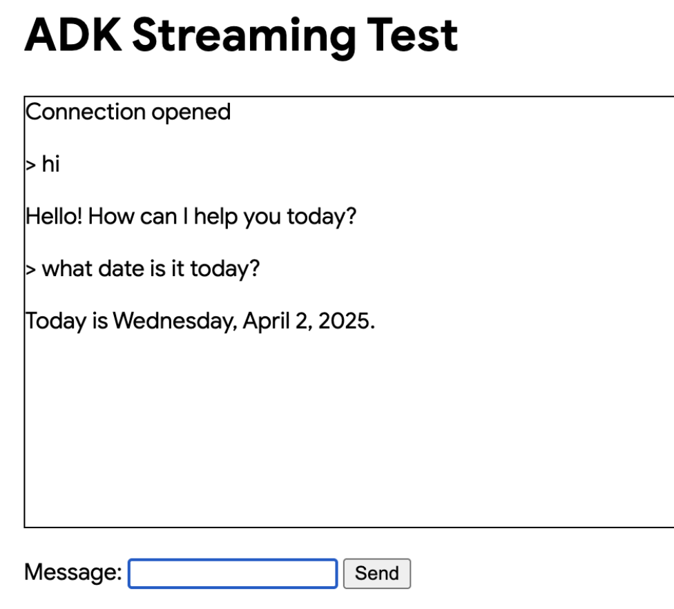

ADK Streaming Quickstart¶
With this quickstart, you'll learn to create a simple agent and use ADK Streaming to enable voice and video communication with it that is low-latency and bidirectional. We will install ADK, set up a basic "Google Search" agent, try running the agent with Streaming with adk web tool, and then explain how to build a simple asynchronous web app by yourself using ADK Streaming and FastAPI.
Note: This guide assumes you have experience using a terminal in Windows, Mac, and Linux environments.
Supported models for voice/video streaming¶
In order to use voice/video streaming in ADK, you will need to use Gemini models that support the Live API. You can find the model ID(s) that supports the Gemini Live API in the documentation:
1. Setup Environment & Install ADK¶
Create & Activate Virtual Environment (Recommended):
# Create
python -m venv .venv
# Activate (each new terminal)
# macOS/Linux: source .venv/bin/activate
# Windows CMD: .venv\Scripts\activate.bat
# Windows PowerShell: .venv\Scripts\Activate.ps1
Install ADK:
2. Project Structure¶
Create the following folder structure with empty files:
adk-streaming/ # Project folder
└── app/ # the web app folder
├── .env # Gemini API key
└── google_search_agent/ # Agent folder
├── __init__.py # Python package
└── agent.py # Agent definition
agent.py¶
Copy-paste the following code block to the agent.py.
For model, please double check the model ID as described earlier in the Models section.
from google.adk.agents import Agent
from google.adk.tools import google_search # Import the tool
root_agent = Agent(
# A unique name for the agent.
name="basic_search_agent",
# The Large Language Model (LLM) that agent will use.
model="gemini-2.0-flash-exp", # Google AI Studio
#model="gemini-2.0-flash-live-preview-04-09" # Vertex AI Studio
# A short description of the agent's purpose.
description="Agent to answer questions using Google Search.",
# Instructions to set the agent's behavior.
instruction="You are an expert researcher. You always stick to the facts.",
# Add google_search tool to perform grounding with Google search.
tools=[google_search]
)
Note: To enable both text and audio/video input, the model must support the generateContent (for text) and bidiGenerateContent methods. Verify these capabilities by referring to the List Models Documentation. This quickstart utilizes the gemini-2.0-flash-exp model for demonstration purposes.
agent.py is where all your agent(s)' logic will be stored, and you must have a root_agent defined.
Notice how easily you integrated grounding with Google Search capabilities. The Agent class and the google_search tool handle the complex interactions with the LLM and grounding with the search API, allowing you to focus on the agent's purpose and behavior.

Copy-paste the following code block to __init__.py and main.py files.
3. Set up the platform¶
To run the agent, choose a platform from either Google AI Studio or Google Cloud Vertex AI:
- Get an API key from Google AI Studio.
-
Open the
.envfile located inside (app/) and copy-paste the following code. -
Replace
PASTE_YOUR_ACTUAL_API_KEY_HEREwith your actualAPI KEY.
- You need an existing
Google Cloud account and a
project.
- Set up a Google Cloud project
- Set up the gcloud CLI
- Authenticate to Google Cloud, from the terminal by running
gcloud auth login. - Enable the Vertex AI API.
-
Open the
.envfile located inside (app/). Copy-paste the following code and update the project ID and location.
4. Try the agent with adk web¶
Now it's ready to try the agent. Run the following command to launch the dev UI. First, make sure to set the current directory to app:
Also, set SSL_CERT_FILE variable with the following command. This is required for the voice and video tests later.
Then, run the dev UI:
Open the URL provided (usually http://localhost:8000 or
http://127.0.0.1:8000) directly in your browser. This connection stays
entirely on your local machine. Select google_search_agent.
Try with text¶
Try the following prompts by typing them in the UI.
- What is the weather in New York?
- What is the time in New York?
- What is the weather in Paris?
- What is the time in Paris?
The agent will use the google_search tool to get the latest information to answer those questions.
Try with voice and video¶
To try with voice, reload the web browser, click the microphone button to enable the voice input, and ask the same question in voice. You will hear the answer in voice in real-time.
To try with video, reload the web browser, click the camera button to enable the video input, and ask questions like "What do you see?". The agent will answer what they see in the video input.
Stop the tool¶
Stop adk web by pressing Ctrl-C on the console.
Note on ADK Streaming¶
The following features will be supported in the future versions of the ADK Streaming: Callback, LongRunningTool, ExampleTool, and Shell agent (e.g. SequentialAgent).
5. Building a Custom Streaming App (Optional)¶
In the previous section, we have checked that our basic search agent works with the ADK Streaming using adk web tool. In the this section, we will learn how to build your own web application capable of the streaming communication using FastAPI.
Add static directory under app, and add main.py and index.html as empty files, as in the following structure:
adk-streaming/ # Project folder
└── app/ # the web app folder
├── main.py # FastAPI web app
└── static/ # Static content folder
└── index.html # The web client page
By adding the directories and files above, the entire directory structure and files will look like:
adk-streaming/ # Project folder
└── app/ # the web app folder
├── main.py # FastAPI web app
├── static/ # Static content folder
| └── index.html # The web client page
├── .env # Gemini API key
└── google_search_agent/ # Agent folder
├── __init__.py # Python package
└── agent.py # Agent definition
main.py
Copy-paste the following code block to the main.py file.
import os
import json
import asyncio
from pathlib import Path
from dotenv import load_dotenv
from google.genai.types import (
Part,
Content,
)
from google.adk.runners import Runner
from google.adk.agents import LiveRequestQueue
from google.adk.agents.run_config import RunConfig
from google.adk.sessions.in_memory_session_service import InMemorySessionService
from fastapi import FastAPI, WebSocket
from fastapi.staticfiles import StaticFiles
from fastapi.responses import FileResponse
from google_search_agent.agent import root_agent
#
# ADK Streaming
#
# Load Gemini API Key
load_dotenv()
APP_NAME = "ADK Streaming example"
session_service = InMemorySessionService()
def start_agent_session(session_id: str):
"""Starts an agent session"""
# Create a Session
session = session_service.create_session(
app_name=APP_NAME,
user_id=session_id,
session_id=session_id,
)
# Create a Runner
runner = Runner(
app_name=APP_NAME,
agent=root_agent,
session_service=session_service,
)
# Set response modality = TEXT
run_config = RunConfig(response_modalities=["TEXT"])
# Create a LiveRequestQueue for this session
live_request_queue = LiveRequestQueue()
# Start agent session
live_events = runner.run_live(
session=session,
live_request_queue=live_request_queue,
run_config=run_config,
)
return live_events, live_request_queue
async def agent_to_client_messaging(websocket, live_events):
"""Agent to client communication"""
while True:
async for event in live_events:
# turn_complete
if event.turn_complete:
await websocket.send_text(json.dumps({"turn_complete": True}))
print("[TURN COMPLETE]")
if event.interrupted:
await websocket.send_text(json.dumps({"interrupted": True}))
print("[INTERRUPTED]")
# Read the Content and its first Part
part: Part = (
event.content and event.content.parts and event.content.parts[0]
)
if not part or not event.partial:
continue
# Get the text
text = event.content and event.content.parts and event.content.parts[0].text
if not text:
continue
# Send the text to the client
await websocket.send_text(json.dumps({"message": text}))
print(f"[AGENT TO CLIENT]: {text}")
await asyncio.sleep(0)
async def client_to_agent_messaging(websocket, live_request_queue):
"""Client to agent communication"""
while True:
text = await websocket.receive_text()
content = Content(role="user", parts=[Part.from_text(text=text)])
live_request_queue.send_content(content=content)
print(f"[CLIENT TO AGENT]: {text}")
await asyncio.sleep(0)
#
# FastAPI web app
#
app = FastAPI()
STATIC_DIR = Path("static")
app.mount("/static", StaticFiles(directory=STATIC_DIR), name="static")
@app.get("/")
async def root():
"""Serves the index.html"""
return FileResponse(os.path.join(STATIC_DIR, "index.html"))
@app.websocket("/ws/{session_id}")
async def websocket_endpoint(websocket: WebSocket, session_id: int):
"""Client websocket endpoint"""
# Wait for client connection
await websocket.accept()
print(f"Client #{session_id} connected")
# Start agent session
session_id = str(session_id)
live_events, live_request_queue = start_agent_session(session_id)
# Start tasks
agent_to_client_task = asyncio.create_task(
agent_to_client_messaging(websocket, live_events)
)
client_to_agent_task = asyncio.create_task(
client_to_agent_messaging(websocket, live_request_queue)
)
await asyncio.gather(agent_to_client_task, client_to_agent_task)
# Disconnected
print(f"Client #{session_id} disconnected")
This code creates a real-time chat application using ADK and FastAPI. It sets up a WebSocket endpoint where clients can connect and interact with a Google Search Agent.
Key functionalities:
- Loads the Gemini API key.
- Uses ADK to manage agent sessions and run the `google_search_agent`.
- `start_agent_session` initializes an agent session with a live request queue for real-time communication.
- `agent_to_client_messaging` asynchronously streams the agent's text responses and status updates (turn complete, interrupted) to the connected WebSocket client.
- `client_to_agent_messaging` asynchronously receives text messages from the WebSocket client and sends them as user input to the agent.
- FastAPI serves a static frontend and handles WebSocket connections at `/ws/{session_id}`.
- When a client connects, it starts an agent session and creates concurrent tasks for bidirectional communication between the client and the agent via WebSockets.
Copy-paste the following code block to the index.html file.
<!doctype html>
<html>
<head>
<title>ADK Streaming Test</title>
</head>
<body>
<h1>ADK Streaming Test</h1>
<div
id="messages"
style="height: 300px; overflow-y: auto; border: 1px solid black"></div>
<br />
<form id="messageForm">
<label for="message">Message:</label>
<input type="text" id="message" name="message" />
<button type="submit" id="sendButton" disabled>Send</button>
</form>
</body>
<script>
// Connect the server with a WebSocket connection
const sessionId = Math.random().toString().substring(10);
const ws_url = "ws://" + window.location.host + "/ws/" + sessionId;
let ws = new WebSocket(ws_url);
// Get DOM elements
const messageForm = document.getElementById("messageForm");
const messageInput = document.getElementById("message");
const messagesDiv = document.getElementById("messages");
let currentMessageId = null;
// WebSocket handlers
function addWebSocketHandlers(ws) {
ws.onopen = function () {
console.log("WebSocket connection opened.");
document.getElementById("sendButton").disabled = false;
document.getElementById("messages").textContent = "Connection opened";
addSubmitHandler(this);
};
ws.onmessage = function (event) {
// Parse the incoming message
const packet = JSON.parse(event.data);
console.log(packet);
// Check if the turn is complete
// if turn complete, add new message
if (packet.turn_complete && packet.turn_complete == true) {
currentMessageId = null;
return;
}
// add a new message for a new turn
if (currentMessageId == null) {
currentMessageId = Math.random().toString(36).substring(7);
const message = document.createElement("p");
message.id = currentMessageId;
// Append the message element to the messagesDiv
messagesDiv.appendChild(message);
}
// Add message text to the existing message element
const message = document.getElementById(currentMessageId);
message.textContent += packet.message;
// Scroll down to the bottom of the messagesDiv
messagesDiv.scrollTop = messagesDiv.scrollHeight;
};
// When the connection is closed, try reconnecting
ws.onclose = function () {
console.log("WebSocket connection closed.");
document.getElementById("sendButton").disabled = true;
document.getElementById("messages").textContent = "Connection closed";
setTimeout(function () {
console.log("Reconnecting...");
ws = new WebSocket(ws_url);
addWebSocketHandlers(ws);
}, 5000);
};
ws.onerror = function (e) {
console.log("WebSocket error: ", e);
};
}
addWebSocketHandlers(ws);
// Add submit handler to the form
function addSubmitHandler(ws) {
messageForm.onsubmit = function (e) {
e.preventDefault();
const message = messageInput.value;
if (message) {
const p = document.createElement("p");
p.textContent = "> " + message;
messagesDiv.appendChild(p);
ws.send(message);
messageInput.value = "";
}
return false;
};
}
</script>
</html>
This HTML file sets up a basic webpage with:
- A form (`messageForm`) with an input field for typing messages and a "Send" button.
- JavaScript that:
- Connects to a WebSocket server at `wss://[current host]/ws/[random session ID]`.
- Enables the "Send" button upon successful connection.
- Appends received messages from the WebSocket to the `messages` div, handling streaming responses and turn completion.
- Sends the text entered in the input field to the WebSocket server when the form is submitted.
- Attempts to reconnect if the WebSocket connection closes.
6. Interact with Your Streaming app¶
1. Navigate to the Correct Directory:
To run your agent effectively, you need to be in the app folder (adk-streaming/app)
2. Start the Fast API: Run the following command to start CLI interface with
3. Access the UI: Once the UI server starts, the terminal will display a local URL (e.g., http://localhost:8000). Click this link to open the UI in your browser.
Now you should see the UI like this:

Try asking a question What is Gemini?. The agent will use Google Search to respond to your queries. You would notice that the UI shows the agent's response as streaming text. You can also send messages to the agent at any time, even while the agent is still responding. This demonstrates the bidirectional communication capability of ADK Streaming.
Benefits over conventional synchronous web apps:
- Real-time two-way communication: Seamless interaction.
- More responsive and engaging: No need to wait for full responses or constant refreshing. Feels like a live conversation.
- Can be extended to multimodal apps with audio, image and video streaming support.
Congratulations! You've successfully created and interacted with your first Streaming agent using ADK!
Next steps¶
- Add audio/image modality: with the Streaming, you can also have real-time communication with the agent using audio and image. We will add more samples for the multimodal support in the future. Stay tuned!